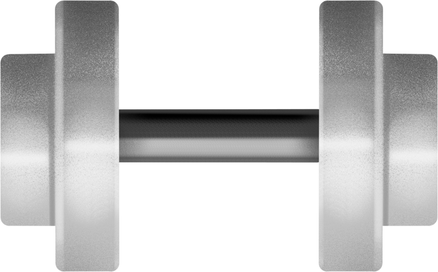

<!-- <section class="favorites-section">Name Surname</section> -->
<section class="favorites-section container">
  <div class="favorites-section-wrapper">


    <div class="favorites-div-with-cards">
      <h2 class="favorites-div-head">Favorites</h2>
      <div class="favorites-div-without-cards favorites-div-without-cards-hidden">
        
        <p class="favorites-div-without-cards-text">
          It appears that you haven't added any exercises to your favorites yet.
          To get started, you can add exercises that you like to your favorites
          for easier access in the future.
        </p>
      </div>

      <ul class="favorites-list"></ul>
    </div>
  </div>
</section>